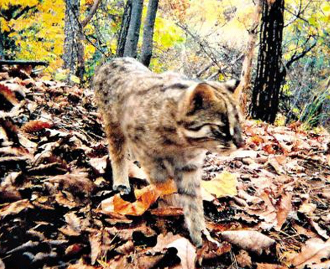

삵

주요특징 및 설명
- 종명: 삵(Amur Leopard Cat)
- 학명: Prionaliurus bengalensis
- 생물학적 분류: 식육목 고양이과
- 분포: 러시아, 한국, 시베리아의 산림지대
- 등급: 멸종위기종 Ⅱ급
- 주요 특징
우리나라에서는 ‘삵’을 표준어로, ‘살쾡이’를 사투리로
인정하고 있다.
삵과 고양이의 가장 확실한 구분은 삵의 귀 뒷면에 흰색에
가까운 누런 반점이 있다는 점이다. 또한, 고양이보다 몸집이 크고 턱 근육이 발달해있다.